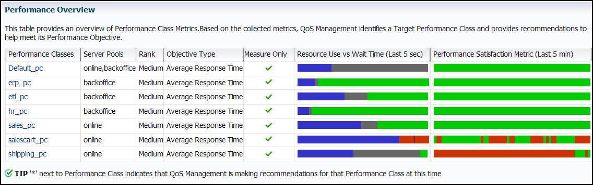

4.2 Monitoring Performance with Oracle Database QoS Management
After you have enabled Oracle Database QoS Management and created a default policy set, as described in "Enabling Oracle Database QoS Management", you can start to use Oracle Database QoS Management to monitor the performance of your system.
In Measure-only and Monitor modes, all the Performance Classes in user-defined Performance Policies have the measure-only box checked. You can set Performance Objectives, and Oracle Database QoS Management displays the Performance Satisfaction Metric (PSM) on the dashboard. If the response time of the system exceeds the Performance Objective specified, the PSM bar changes to red and an optional alert generated, as shown in Figure 4-1. Oracle Database QoS Management does not make recommendations if the measure-only check box is selected.
Figure 4-1 Performance Satisfaction Metrics for Measure-Only Performance Classes
Description of "Figure 4-1 Performance Satisfaction Metrics for Measure-Only Performance Classes "
Running Oracle Database QoS Management in Measure-only or Monitor mode allows you to understand how various workloads perform when sharing resources. Measure-only and Monitor modes assist you in determining the baseline Performance Objectives to use for each Performance Class. You can also use these modes to identify performance bottlenecks in your system.
Starting with the Oracle Database 12c release 2 (12.2.0.1) release, you can use Oracle Database QoS Management with Oracle RAC on systems in full management mode in both policy- and administrator-managed deployments. Oracle Database QoS Management also supports the full management of multitenant databases in both policy- and administrator-managed deployments. Earlier releases only support measure-only and monitor modes on Oracle RAC multitenant and administrator-managed deployments.